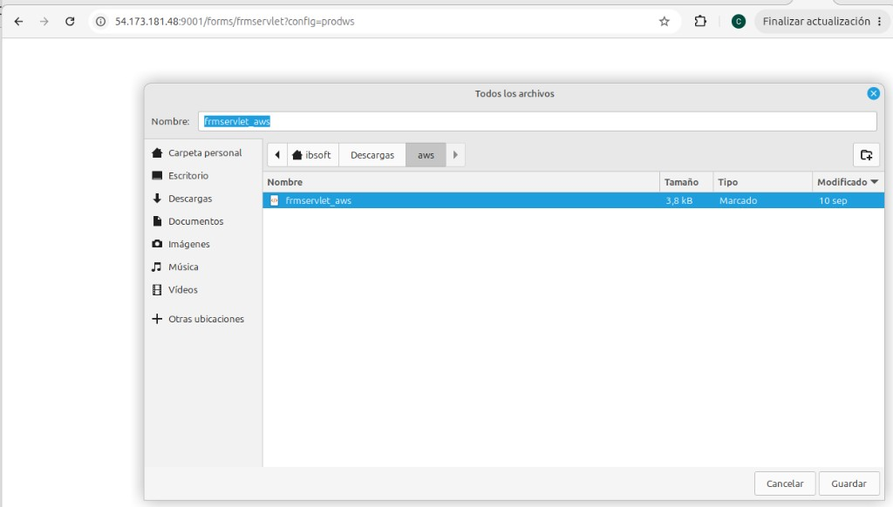

Compilación de las aplicaciones en el contenedor forms-server
Guía para compilar las aplicaciones en el contenedor forms-server del cluster forms_report:
los módulos Forms con frmcmp y los programas Pro*C con proc y
gcc. Parte del contenedor creado en la guía del Contenedor Forms,
cuya task definition ya define las variables de compilación (FORMS_PATH, FRMCMP, PROC,
PROC_INCLUDE, PCSCFG, CC); el acceso al contenedor es por ECS Exec como en
Forms 3.
Fuentes en EFS, compilación en el contenedor, ejecutables listos para WLS_FORMS.
Compilación de los módulos Forms (.fmb, .pll, .mmb) a sus ejecutables
(.fmx, .plx, .mmx) con frmcmp, dentro del contenedor
forms-server.
Las fuentes y los ejecutables de la aplicación están en el directorio forms_app. Localmente vive en
forms_reports/dist/app/forms_app; en ECS está en el EFS (domain_forms/app) y el volumen
efs-app de la task definition lo monta dentro del contenedor como:
/u01/oracle/user_projects/apps/forms_app
Como el directorio está en el EFS, los .fmx compilados quedan disponibles de inmediato para
WLS_FORMS y persisten entre despliegues de la tarea. Dentro de forms_app:
forms_app/ ├── compile_all_forms.sh script: compila todas las formas y menús ├── compile_forms_list.sh script: compila solo los módulos de una lista (.lis) ├── src/ fuentes a compilar │ ├── rector/ formas (.fmb) │ └── menues/ menús (.mmb) ├── lib/ librerías usadas en la compilación de los .fmb ├── bin/ salida de la compilación │ ├── fmx/ formas compiladas (.fmx) │ └── mnu/ menús compilados (.mmx) └── log/ logs de ejecución del script de compilación
| Directorio | Contenido |
|---|---|
compile_all_forms.sh | Script que compila todos los módulos: src/rector/*.fmb → bin/fmx y src/menues/*.mmb → bin/mnu. Muestra el avance [i/N] de cada módulo y deja los logs de cada ejecución en log/compile_all/<AAAAMMDD_HHMMSS>/: el resumen, un .log y un .err por módulo, y resultados.csv con una línea por módulo (n;total;tipo;modulo;rc;resultado;fuente). |
compile_forms_list.sh | Script que compila solo los módulos indicados en un archivo .lis (por defecto formas.lis; las listas por grupo están en listas/). Deja sus logs en log/compile_list. |
src | Fuentes a compilar: formas .fmb en src/rector (≈2.290) y menús .mmb en src/menues (25). |
lib | Librerías que referencian los .fmb al compilar (.pll, .olb). |
bin | Directorio de salida: .fmx en bin/fmx y .mmx en bin/mnu. |
log | Logs de cada ejecución del script de compilación: un log resumen y un .err por módulo con los errores de frmcmp. |
.fmb deben compilarse en el mismo entorno donde se ejecutan (Forms 14.1.2, Linux x64): los
.fmx no son portables entre versiones ni plataformas.
La compilación se ejecuta dentro del contenedor forms-server, que tiene frmcmp, la conexión a la
base de datos y el directorio forms_app montado desde el EFS. Primero hay que conectarse al contenedor con
ECS Exec (como en Forms 3) y luego ejecutar, como usuario
oracle, los scripts de compilación del punto 1.1.1.
1. Conectarse al contenedor forms-server:
# El ID de la tarea (--task) cambia con cada despliegue del servicio forms: tomar el de la # tarea en ejecución actual (ECS → forms_report → servicio forms → pestaña Tareas) aws ecs execute-command --cluster forms_report --task dba0a9d75d77475d8a3ca34c79e98e41 \ --container forms-server --interactive --command "su -s /bin/bash oracle"
2. Apartar los fuentes que no están en uso: se movieron a una carpeta old_version dentro de cada directorio
todos los src/rector/*.fmb y src/menues/*.mmb que no se encuentran entre los compilados
(.fmx / .mmx) de la versión 12c actualmente en ejecución. La referencia es
lista_fmx.txt, un listado ls -l de esos compilados, y el movimiento lo hace
move_old_fmb.sh:
cd /u01/oracle/user_projects/apps/forms_app ./move_old_fmb.sh
| Directorio | Antes | Movidos a old_version | Quedan |
|---|---|---|---|
src/rector (*.fmb) | 2.289 | 207 | 2.082 |
src/menues (*.mmb) | 25 | 12 | 13 |
3. Ejecutar el script de compilación que corresponda:
cd /u01/oracle/user_projects/apps/forms_app # Compilación completa (formas de src/rector y menús de src/menues) ./compile_all_forms.sh # Solo los módulos de una lista (por defecto formas.lis; listas por grupo en listas/) ./compile_forms_list.sh ./compile_forms_list.sh listas/<grupo>.lis
| Variable opcional | Uso |
|---|---|
FORMS_USERID | Usuario de conexión para compilar (usuario/clave@alias). Si no está definida, los scripts usan uspan/uspandesa@BANESCO_DEV; el alias se resuelve con el tnsnames.ora de TNS_ADMIN. |
EXCLUDE_REGEX | Solo compile_all_forms.sh: expresión regular de nombres a omitir, p. ej. '_old|_OLD|\(1\)'. |
nohup ./compile_all_forms.sh &
para que no se corte si se cierra la sesión de ECS Exec. Ninguno de los scripts se detiene por el fallo de un módulo; al
final muestran un resumen y los módulos fallidos, y el detalle de cada uno queda en su .err dentro de
log/.
Estado final de los módulos que quedan en src después de apartar los que no están en uso (punto
1.1.2), según su compilación más reciente en forms-server: compilación completa del
10/09/2026 (compile_all_forms.sh), recompilaciones del 02/10 y 05/10/2026, y recompilación de
formas.lis (150 módulos pendientes o con error) el 13/10/2026. Logs en forms_app/log/log_aws_* y
forms_app/log/compile_list_13102026.
| Estado final | Módulos |
|---|---|
| Compilados (2.063 formas y 13 menús) | 2.076 |
| Pendientes | 19 |
Total (2.082 formas de src/rector y 13 menús de src/menues) | 2.095 |
En la recompilación del 13/10 compilaron 131 de los 150 módulos de formas.lis (15 sin avisos, entre ellos los
13 menús, y 116 con avisos). Los 19 pendientes, agrupados por causa:
| Grupo | Causa | Módulos | Qué hay que hacer | Dónde se corrige |
|---|---|---|---|---|
| 1 | El fuente no coincide con el esquema de BANESCO_DEV: columna CADO_CARP_CD_RAMO inexistente en CART_DOCUMENTOS (6) y CJDP_FE_TERMINO no reconocida como columna (1) | 7 | Agregar las columnas en la base o compilar contra un esquema que las tenga | Base de datos |
| 2 | FRM-18108: falta EJECUTAREP.fmb (objetos EJEREP y REPORTE) | 7 | Conseguir EJECUTAREP.fmb y copiarlo a src/rector | Fuentes |
| 3 | FRM-18108: referencias a una ruta de Windows (X:\Bibliotecas\OBJL00010.olb), a módulos de prueba (CARF64322_9.fmb, Nueva_Prueba1.fmb) o a una clase de propiedades dañada (CLASS_ITEM) | 5 | Apuntar la referencia al módulo real | Forms Builder |
Módulos de cada grupo:
| Grupo | Módulos |
|---|---|
| 1 | CARF30024, CARF40003, CARF40057, CARF63339, CARF63343, CARF63346 (CADO_CARP_CD_RAMO); CONF40030 (CJDP_FE_TERMINO) |
| 2 | CAJF30073, CONF60132, SINF40690, VIDF00009, VIDF00055, VIDF40521, VIDF90030 |
| 3 | CARF40045 (OBJL00010.olb en X:), CARF64321 (CARF64322_9.fmb), CARF64322 y CARF64342 (Nueva_Prueba1.fmb), FINF10004 (CLASS_ITEM) |
RUN_PRODUCT y CREF00040X (1).fmb, los 154 módulos con
FRM-18130 (fuentes de Forms 5.0) y el resto de pendientes de esquema ya no aparecen: esos fuentes no tienen
compilado en la versión 12c y se movieron a old_version. Una vez corregidos, los pendientes se recompilan
con ./compile_forms_list.sh <lista>.lis, con una lista que contenga solo esos módulos.
RECTOR se levanta en WLS_FORMS con un profile propio, prodws, el mismo nombre que tenía en la
versión 12c. El profile indica la forma inicial (Rector.fmx) y el archivo de entorno
(rector.env) con la ruta de los compilados del punto 1.1. Se accede con la IP
privada (por el túnel a la VPC) o la IP pública de la tarea forms-server (punto 1.2.6):
http://<IP-privada>:9001/forms/frmservlet?config=prodws http://<IP-pública>:9001/forms/frmservlet?config=prodws
Todos están en el dominio, dentro del contenedor forms-server, en el directorio de la aplicación Forms:
/u01/oracle/user_projects/domains/forms_domain/config/fmwconfig/servers/WLS_FORMS/applications/formsapp_14.1.2/config
| Archivo | Uso |
|---|---|
formsweb.cfg | Profiles de frmservlet: la sección [default] con los valores comunes y una sección por profile ([prodws]) con lo que cambia. El parámetro config= de la URL elige la sección. |
rector.env | Entorno del runtime de Forms (frmweb) para RECTOR: FORMS_PATH, TNS_ADMIN, NLS_*. Reemplaza a default.env solo para prodws. |
base.jnlp | Plantilla del descriptor Java Web Start que se descarga el cliente. |
$DOMAIN_HOME/config/fmwconfig/tnsnames.ora | Alias de base de datos (SEGU, BANESCO_DEV, DESARROLLO), apuntado por TNS_ADMIN. |
Copia de referencia de formsweb.cfg y rector.env en forms_reports/dist/app/forms_app.
prodws (formsweb.cfg)Sección agregada al final de formsweb.cfg:
# RECTOR — named config from remote domain "rector" (prodws) [prodws] basejnlp=/u01/oracle/user_projects/domains/forms_domain/config/fmwconfig/servers/WLS_FORMS/applications/formsapp_14.1.2/config/base.jnlp webstart=enabled envFile=/u01/oracle/user_projects/domains/forms_domain/config/fmwconfig/servers/WLS_FORMS/applications/formsapp_14.1.2/config/rector.env form=Rector.fmx imageBase=codebase
| Parámetro | Valor | Uso |
|---|---|---|
webstart | enabled | La aplicación se ejecuta con Java Web Start (JNLP), no dentro del navegador. |
basejnlp | …/config/base.jnlp | Plantilla del JNLP. |
envFile | …/config/rector.env | Entorno del runtime (punto 1.2.3). |
form | Rector.fmx | Forma inicial, buscada en FORMS_PATH; carga el menú RECTOR.mmx. |
imageBase | codebase | Las imágenes de los íconos se descargan desde el codebase (/forms/java). |
El resto se hereda de [default]: serverURL=/forms/lservlet, codebase=/forms/java,
archive=frmall.jar, lookAndFeel=Oracle, colorScheme=swan y
userid= vacío, así que Forms muestra la pantalla de conexión (usuario, clave y base).
rector.env)
Adaptado del rector.env de la versión 12c. Si una variable no está en el archivo, el runtime toma la del entorno
de WLS_FORMS:
| Variable | Valor | Uso |
|---|---|---|
FORMS_PATH | …/forms_app/bin/fmx:…/forms_app/bin/mnu:…/forms_app/bin:/u01/oracle/forms | Dónde se buscan las formas, menús y librerías. Equivale a /aplicacion/TRector/Ejecutables/{fmx,mnu} de la versión 12c. |
FORMS_MODULE_PATH | $FORMS_PATH | Restringe la ejecución a módulos de esas rutas. |
TNS_ADMIN | $DOMAIN_HOME/config/fmwconfig | Ubicación del tnsnames.ora. |
NLS_LANG | AMERICAN_AMERICA.WE8ISO8859P1 | Idioma y juego de caracteres de la sesión. |
NLS_DATE_FORMAT | DD-MM-YYYY | Formato de fecha que esperan las formas. |
FORMS_RESTRICT_ENTER_QUERY | TRUE | Impide escribir SQL libre en modo consulta. |
WEBUTIL_CONFIG | …/instances/forms1/server/webutil.cfg | Configuración de WebUtil. |
CLASSPATH, PATH, LD_LIBRARY_PATH, LD_PRELOAD | Los de default.env de Forms 14.1.2 | JVM y librerías del runtime; no se adaptan de la versión 12c. |
CALL_FORM,
OPEN_FORM, REPLACE_MENU) debe existir en FORMS_PATH con el mismo nombre, o Forms
responde FRM-40010: Cannot read form.
1. Conectarse al contenedor forms-server como oracle (punto 1.1.2) y respaldar los archivos:
CFG=$DOMAIN_HOME/config/fmwconfig/servers/WLS_FORMS/applications/formsapp_14.1.2/config cd $CFG cp -p formsweb.cfg formsweb.cfg.bak_$(date +%Y%m%d)
2. Copiar rector.env en $CFG y agregar la sección [prodws] al final de
formsweb.cfg (punto 1.2.2).
3. Verificar:
awk '/^\[prodws\]/{f=1;print;next} /^\[/{f=0} f' $CFG/formsweb.cfg # sección del profile
grep -E '^(FORMS_PATH|TNS_ADMIN|NLS_)' $CFG/rector.env
ls -l /u01/oracle/user_projects/apps/forms_app/bin/fmx/Rector.fmx /u01/oracle/user_projects/apps/forms_app/bin/mnu/RECTOR.mmx
# El servlet debe responder con el JNLP del profile (HTTP 200)
curl -s -o /dev/null -w '%{http_code}\n' "http://localhost:9001/forms/frmservlet?config=prodws"
frmservlet lee formsweb.cfg en cada solicitud; si el profile no aparece, reiniciar
WLS_FORMS (punto 1.2.5). Si la sección [prodws] no existe, el
servlet responde con un error de configuración no encontrada en lugar del JNLP.
WLS_FORMS arranca solo al iniciar la tarea forms-server
(Forms 5). El arranque manual se usa cuando el servidor está
detenido (por ejemplo, después de un cambio de configuración) o para ver el arranque paso a paso. Desde la sesión ECS
Exec en forms-server como oracle (punto 1.1.2):
cd /u01/oracle/scripts/ ./startWLSForms.sh
Salida de un arranque correcto (13/10/2026):
========================================== Inicio de WLS_FORMS ========================================== Modo : Normal DOMAIN_HOME : /u01/oracle/user_projects/domains/forms_domain ADMIN_URL : t3://weblogic-admin.forms.local:7001 Log : /u01/oracle/user_projects/domains/forms_domain/servers/WLS_FORMS/logs/WLS_FORMS.out LD_LIBRARY_PATH: /u01/oracle/lib:/u01/oracle/oracle_common/lib TNS_ADMIN : /u01/oracle/user_projects/domains/forms_domain/config/fmwconfig Verificando AdminServer en weblogic-admin.forms.local:7001 ... OK Arrancando WLS_FORMS ... Lanzado (PID 5863) Esperando estado RUNNING (máx. 600s) ... ✓ WLS_FORMS en RUNNING (60s) http://localhost:9001/forms/frmservlet -> HTTP 200 Para ver los logs en tiempo real: tail -f /u01/oracle/user_projects/domains/forms_domain/servers/WLS_FORMS/logs/WLS_FORMS.log o tail -f /u01/oracle/user_projects/domains/forms_domain/servers/WLS_FORMS/logs/WLS_FORMS.out
| Etapa | Qué indica |
|---|---|
| Encabezado | Entorno con el que arranca: dominio, URL del AdminServer (nombre de Cloud Map weblogic-admin.forms.local), log de salida, LD_LIBRARY_PATH y TNS_ADMIN. |
Verificando AdminServer … OK | El AdminServer responde en el puerto 7001; sin él, WLS_FORMS no puede arrancar. En modo normal el script termina con error; con -keep (el de la task definition) espera a que el AdminServer responda. |
Lanzado (PID …) | WLS_FORMS se inicia en segundo plano; su salida va a WLS_FORMS.out. |
✓ WLS_FORMS en RUNNING (60s) | El servidor llegó a RUNNING (espera máxima 600 s). |
frmservlet -> HTTP 200 | Forms responde: ya se puede abrir config=prodws (punto 1.2.6). |
WLS_FORMS.log muestra <Server state changed to RUNNING.>
(BEA-000365). Con ./startWLSForms.sh --no-wait el script no espera el estado RUNNING. Para
controlar WLS_FORMS desde la consola del AdminServer hace falta además el Node Manager
(./startNodeManager.sh).
Igual que la validación de Forms 5, pero con
config=prodws. Las IP son las de la tarea forms-server en ejecución (pestaña
Redes de la tarea) y cambian en cada despliegue. Hay dos formas de llegar:
| Acceso | URL (ejemplo del 13/10/2026) | Cuándo usarlo |
|---|---|---|
| IP privada, por el túnel a la VPC | http://10.171.244.144:9001/forms/frmservlet?config=prodws | Opción recomendada. Requiere el túnel a la VPC activo (ruta a 10.171.240.0/20); funciona aunque haya otra VPN conectada. |
| IP pública | http://54.173.181.48:9001/forms/frmservlet?config=prodws | Desde internet, sin túnel. El security group forms-sg-ecs admite el puerto 9001 desde 0.0.0.0/0. |
Para obtener las dos IP de la tarea actual desde la línea de comandos:
T=$(aws ecs list-tasks --cluster forms_report --service-name forms --desired-status RUNNING --query 'taskArns[0]' --output text)
ENI=$(aws ecs describe-tasks --cluster forms_report --tasks "$T" \
--query 'tasks[0].attachments[0].details[?name==`networkInterfaceId`].value|[0]' --output text)
aws ec2 describe-network-interfaces --network-interface-ids "$ENI" \
--query 'NetworkInterfaces[0].{privada:PrivateIpAddress,publica:Association.PublicIp}' --output table
ip route | grep 10.171.240.0/20 # túnel a la VPC activo en la máquina cliente
ERR_CONNECTION_RESET y curl da Recv failure: Connection reset by peer. La VPN
acepta la conexión TCP en cualquier puerto (incluso en puertos que el security group no permite) y luego la corta, así
que el problema no es del servidor ni del security group. Usar la IP privada por el túnel a la VPC, o desconectar la VPN
por completo: la interfaz de la VPN (proton0) no debe aparecer en ip -brief link y
curl -s https://checkip.amazonaws.com debe mostrar la IP real de salida.
1. Abrir la URL en el navegador. El servidor responde con el descriptor JNLP (application/x-java-jnlp-file,
≈3,7 kB), que el navegador ofrece guardar con el nombre frmservlet. Se puede guardar con otro nombre, por
ejemplo frmservlet_aws en ~/Descargas/aws:

frmservlet?config=prodws: guardar el JNLP (frmservlet_aws)
El JNLP lleva en codebase la IP con la que se pidió la URL, y desde ahí Java Web Start descarga
frmall.jar y se conecta a WLS_FORMS. Por eso hay que descargarlo de nuevo en cada despliegue de
la tarea, y no reutilizar uno guardado antes. También se puede descargar con curl:
cd ~/Descargas/aws
curl -s -o frmservlet_prodws "http://10.171.244.144:9001/forms/frmservlet?config=prodws"
grep codebase= frmservlet_prodws # debe mostrar la IP actual de la tarea
2. Ejecutar el JNLP con Java Web Start (Java 8), poco después de descargarlo:
cd ~/Descargas/aws $JAVA_HOME/bin/javaws ./frmservlet_prodws
3. Ingresar a RECTOR:
Rector.fmx y muestra la pantalla de conexión: usuario, clave y base (alias del tnsnames.ora, p. ej. SEGU).RECTOR.mmx, y desde él los menús GIO_* y las formas de bin/fmx.| Error | Causa | Qué revisar |
|---|---|---|
ExitException[ 3]java.net.SocketException: Connection reset en JNLP2Manager.ensureAllJnlpFilesAreAvailable | Java Web Start no puede descargar frmall.jar: el JNLP es de una tarea anterior (su codebase apunta a una IP que ya no existe) o la IP pública está bloqueada por una VPN | Descargar el JNLP de nuevo, con la IP actual, y revisar con grep codebase= <archivo> que la IP sea la de la tarea en ejecución. |
| Configuración no encontrada | El profile no existe | Sección [prodws] en formsweb.cfg. |
FRM-40010 | No encuentra la forma o el menú | FORMS_PATH de rector.env, que el .fmx/.mmx exista (punto 1.1.3) y las mayúsculas del nombre. |
FRM-93131 | Falta la plantilla HTML o JNLP | Rutas baseHTML* / basejnlp de formsweb.cfg. |
ORA-12154 | Alias de base desconocido | TNS_ADMIN de rector.env y el alias en tnsnames.ora. |
Para seguir las sesiones en el servidor:
tail -f $DOMAIN_HOME/servers/WLS_FORMS/logs/access.log | grep prodws tail -f $DOMAIN_HOME/servers/WLS_FORMS/logs/formsapp-diagnostic.log
Precompilación de los programas Pro*C (.pc) con proc y compilación y enlace con gcc,
dentro del contenedor forms-server.
Los programas Pro*C están en el directorio proc_app. Localmente vive en forms_reports/dist/app/proc_app;
en ECS está en el mismo volumen efs-app que forms_app (1.1.1) y se ve dentro del
contenedor como:
/u01/oracle/user_projects/apps/proc_app
Cada programa pasa por dos etapas, y cada etapa deja su resultado en un directorio distinto:
src/X.pc --proc--> obj/X.c --gcc--> bin/X
proc_app/ ├── compile_proc_all.sh script: compila todos los programas Pro*C ├── compile_proc_list.sh script: compila solo los programas de una lista (.lis) ├── src/ fuentes Pro*C (.pc) ├── include/ cabeceras propias usadas al compilar (.h) ├── obj/ código C generado por proc (.c) ├── bin/ ejecutables generados por gcc └── log/ logs de ejecución del script de compilación
| Directorio | Contenido |
|---|---|
compile_proc_all.sh | Script que compila todos los src/*.pc: genera la lista de fuentes y delega en compile_proc_list.sh. Deja sus logs en log/compile_proc_all. |
compile_proc_list.sh | Script que compila solo los programas indicados en un archivo .lis (por defecto proc.lis; entradas X.pc, X o ruta absoluta). Deja sus logs en log/compile_proc_list. |
src | Fuentes Pro*C a compilar (≈760 .pc). Los fuentes sin main() son de inclusión y no generan ejecutable. |
include | Cabeceras que necesitan los fuentes y que no trae Linux, como floatingpoint.h. Se pasan a proc y a gcc junto con $ORACLE_HOME/precomp/public (PROC_INCLUDE). |
obj | Salida intermedia: el .c que genera proc a partir de cada .pc. |
bin | Salida final: un ejecutable por programa, generado por gcc. |
log | Logs de cada ejecución del script de compilación, en una subcarpeta por script: un log resumen por ejecución y, por programa, un .log y el listado .lis de proc. |
$ORACLE_HOME/lib): deben
compilarse y ejecutarse en la misma imagen.
Se movieron a src/old_version todos los src/*.pc que no se encuentran entre los ejecutables de
la versión 12c actualmente en ejecución. La referencia es lista_proc.txt, un listado ls -l de
esos ejecutables (sin extensión: X.pc se compara con X), y el movimiento lo hace
move_old_proc.sh:
cd /u01/oracle/user_projects/apps/proc_app ./move_old_proc.sh
| Directorio | Antes | Movidos a old_version | Quedan |
|---|---|---|---|
src (*.pc) | 762 | 136 | 626 |
compile_proc_all.sh solo toma src/*.pc (sin subcarpetas), los fuentes de
src/old_version ya no se compilan. Los fuentes de inclusión GENL00000.pc y
new30055.pc no generan ejecutable, pero los incluyen otros programas: deben quedarse en src, y
move_old_proc.sh no mueve fuentes sin main().
Resultado final en forms-server (gcc 11, CFLAGS=-std=gnu89,
sqlcheck=semantics contra BANESCO_DEV): compilación completa del 13/10/2026
(compile_proc_all.sh) y recompilación de los fallidos por PCC-S-02345 con
proc.lis. Logs en proc_app/log/compile_proc_all y proc_app/log/compile_proc_list.
| Estado final | Programas |
|---|---|
| Compilados | 619 |
Saltados: fuentes de inclusión sin main() (GENL00000, new30055) | 2 |
| Pendientes | 5 |
Total (src/*.pc) | 626 |
Los 5 pendientes:
| Programa | Error | Causa | Qué hay que hacer |
|---|---|---|---|
CAJC30001 | PLS-S-00201 en proc (línea 1583) | CARTERA.P_PROCESAR_DEVOLUCION no existe en BANESCO_DEV o el usuario no tiene permiso de ejecución | Crear el procedimiento u otorgar EXECUTE en la base |
ESTC30042, SINC30125, SINC31001 | PLS-S-00395 en proc | El INSERT INTO BATB_SINPAG_MENSUAL_01 VALUES envía 20 valores y la tabla en BANESCO_DEV tiene otro número de columnas | Alinear la tabla con producción o listar las columnas en el INSERT |
CAJC30140 | gcc | Variable mal escrita: WCARD_CA1SU_CD_SUCURSAL (debería ser WCARD_CASU_CD_SUCURSAL) | Corregir el nombre en el fuente (línea 736) |
BANESCO_DEV. Otra opción es recompilarlos contra una base que tenga esos objetos con
PROC_USERID='usuario/clave@ALIAS' ./compile_proc_list.sh.
CARC00100 es el programa que atiende una cola de procesos: lee las órdenes pendientes de
CART_ORDENES_PROCESOS para su cola y ejecuta cada programa (Pro*C o reporte con rwclient.sh).
Se ejecuta dentro del contenedor reports-server, desde el directorio de los compilados Pro*C
(proc_app/bin, en el EFS), donde está el ejecutable CARC00100 compilado en el punto
2.1.
CARC00100 <cola> <máquina> <alias> <base>
| Parámetro | Ejemplo | Uso |
|---|---|---|
cola | Y | Cola que atiende el proceso (CART_COLAS). Solo debe haber un CARC00100 por cola. |
máquina | weblogic-forms.forms.local | Debe coincidir con CART_CONFIG_BATCH.CACH_NM_MAQUINA (máximo 40 caracteres); de esa fila salen los directorios de salida y el Reports Server por defecto. |
alias | SEGU | Alias de la base. |
base | SEGU | Nombre de la base. |
| Requisito | Dónde | Valor |
|---|---|---|
| Conexión a la base | Variables PASS_FILE y TWO_TASK | EXEC SQL CONNECT lee usuario y clave de PASS_FILE (proc_app/bin/USUARIOBATCH.lis) y usa el alias de TWO_TASK (SEGU), resuelto con el tnsnames.ora de TNS_ADMIN. |
| Configuración de la máquina | CART_CONFIG_BATCH | Fila con CACH_NM_MAQUINA = parámetro máquina y CACH_DIR_SALIDAS_* = /u01/oracle/user_projects/apps/reports_app/rep/. |
| Reports Server | CART_COLAS.CALA_NM_REPSERV (si es nulo, CART_CONFIG_BATCH.CACH_NM_REPSERV) | rep_wls_reports_weblogic-reports, nombre del servidor in-process de WLS_REPORTS. |
rwclient.sh | PATH | El del dominio ($DOMAIN_HOME/reports/bin), no la plantilla de $ORACLE_HOME/bin. Las librerías que necesita (libnsl.so.2) vienen en la imagen r3. |
| Escritura de reportes | rwserver.conf de WLS_REPORTS | <folderAccess> con escritura en reports_app/rep; si falta, los reportes fallan con REP-56133. |
| Impresión inmediata | proc_app/bin/LP.sh en el PATH | Desactivada: LP.sh solo registra la solicitud en colas_app/log/LP.log (ver más abajo). |
Ajustes de base de datos: el parámetro máquina (weblogic-forms.forms.local, 26 caracteres) es más
largo que el nombre del servidor de la versión 12c (bsdevap9710), y las columnas donde CARC00100 lo
busca o lo guarda se ampliaron a 40 caracteres:
ALTER TABLE CARTERA.CART_CONFIG_BATCH MODIFY (CACH_NM_MAQUINA VARCHAR2(40)); ALTER TABLE CARTERA.CART_IMPRESIONES MODIFY (CAON_NM_MAQUINA VARCHAR2(40));
| Tabla | Columna | Uso en CARC00100 | Error sin el ajuste |
|---|---|---|---|
CART_CONFIG_BATCH | CACH_NM_MAQUINA | F_Sel_Ambiente: busca la fila de la máquina (directorios de salida y Reports Server). | No se puede registrar la máquina con su nombre completo: Error en busqueda del ambiente en F_Sel_Ambiente |
CART_IMPRESIONES | CAON_NM_MAQUINA | F_Upd_impresiones: registra el archivo generado por el reporte. | ORA-12899: value too large for column "CARTERA"."CART_IMPRESIONES"…; el PDF se genera pero no queda registrado |
La task definition de reports-server ya define TNS_ADMIN, DOMAIN_HOME y
ORACLE_HOME, pero no PASS_FILE ni TWO_TASK, y su PATH no incluye
$DOMAIN_HOME/reports/bin ni proc_app/bin: el script apps/set_batch_env.sh los
prepara en la sesión antes de ejecutar (punto 2.2.3).
Impresión inmediata desactivada: cuando una orden tiene modo de impresión I, CARC00100
(F_Ins_imprimir) ejecuta, después de registrar el archivo en CART_IMPRESIONES:
LP.sh <máquina> <script_salida> <directorio> <archivo> <impresora> <copias>
En la versión 12c LP.sh enviaba el archivo a la impresora del servidor; ese script no se migró y en ECS no hay
impresoras, así que la cola fallaba con sh: line 1: LP.sh: command not found. En su lugar,
proc_app/bin/LP.sh no imprime: agrega una línea con el comando recibido a
/u01/oracle/user_projects/apps/colas_app/log/LP.log y termina con código 0. El reporte queda generado en
reports_app/rep y registrado en CART_IMPRESIONES, igual que antes.
CARC00100 invoca LP.sh sin directorio (la variable del directorio de scripts,
wDIR_OBJ_SCRIPT, nunca se carga en F_Sel_Ambiente), así que el shell lo busca en el PATH: proc_app/bin debe estar en el
PATH de la sesión (punto 2.2.3). Para reactivar la impresión, reemplazar ese
LP.sh por uno que envíe el archivo a la impresora que corresponda.
1. Conectarse al contenedor reports-server:
# El ID de la tarea (--task) cambia con cada despliegue del servicio reports-server: tomar el de # la tarea en ejecución actual (ECS → forms_report → servicio reports-server → pestaña Tareas) aws ecs execute-command --cluster forms_report --task 4942b81cf33848e8bdd80ab4a458b606 \ --container reports-server --interactive --command "su -s /bin/bash oracle"
2. Ubicarse en el directorio de los compilados Pro*C:
cd /u01/oracle/user_projects/apps/proc_app/bin
3. Cargar el entorno con set_batch_env.sh (en /u01/oracle/user_projects/apps). Debe cargarse con
source, no ejecutarse, para que las variables queden en la sesión:
source ../set_batch_env.sh
El script exporta PASS_FILE, TWO_TASK, TNS_ADMIN, DOMAIN_HOME y
ORACLE_HOME, agrega $DOMAIN_HOME/reports/bin y proc_app/bin al PATH, y
muestra dónde encontró rwclient.sh y LP.sh. La salida esperada es:
PASS_FILE=/u01/oracle/user_projects/apps/proc_app/bin/USUARIOBATCH.lis TWO_TASK=SEGU TNS_ADMIN=/u01/oracle/user_projects/domains/forms_domain/config/fmwconfig DOMAIN_HOME=/u01/oracle/user_projects/domains/forms_domain rwclient.sh=/u01/oracle/user_projects/domains/forms_domain/reports/bin/rwclient.sh LP.sh=/u01/oracle/user_projects/apps/proc_app/bin/LP.sh ORACLE_HOME=/u01/oracle rwclient: -rwxr-x--x. oracle:oracle
<no encontrado> o una línea AVISO:, corregir antes de ejecutar: sin
rwclient.sh no se generan los reportes y sin LP.sh la cola falla con
sh: line 1: LP.sh: command not found (falta en el PATH o no tiene permiso de ejecución:
chmod 755 LP.sh).
4. Ejecutar la cola (ejemplo con la cola Y). CARC00100 atiende las órdenes pendientes de la cola
una por una y termina cuando ya no quedan:
mkdir -p /u01/oracle/user_projects/apps/colas_app/log ./CARC00100 Y weblogic-forms.forms.local SEGU SEGU >> /u01/oracle/user_projects/apps/colas_app/log/COLA_Y.log
Para que siga corriendo aunque se cierre la sesión de ECS Exec, lanzarlo en segundo plano. stdbuf -oL hace que
la salida se escriba línea por línea; sin él, si el programa termina de forma anormal el log puede quedar vacío:
nohup stdbuf -oL ./CARC00100 Y weblogic-forms.forms.local SEGU SEGU \ >> /u01/oracle/user_projects/apps/colas_app/log/COLA_Y.log 2>&1 & ps -ef | grep "CARC00100 Y" | grep -v grep
5. Revisar el log de la cola:
tail -200 /u01/oracle/user_projects/apps/colas_app/log/COLA_Y.log
Ejemplo de una ejecución correcta (13/10/2026, cola Y, secuencia 204233, reporte CARR10306):
Inicia la conexion del programa CARC00100 Recibe las variables de COLA y MAQUINA /n ARCHIVO PASSWORD PASS_FILE /u01/oracle/user_projects/apps/proc_app/bin/USUARIOBATCH.lis Selecciono el ambiente Variable Wreporte_server rep_wls_reports_weblogic-reports Variable Wreporte_server despues el if rep_wls_reports_weblogic-reports Valor del Status de la Cola 0 Valor de la variable paso 0 LA COLA ESTA OCUPADA Y STATUS 1 .... SECUENCIA.............> 204233 Fecha Orden..........> 22-09-2026 Orden................> 1080 Hora Orden...........> 19:30:36 SubOrden.............> 07 Prioridad............> 0 Usuario..............> SGONLINE Impresora............> NULL Copias...............> 1 Parametros Script....> Programa.............> CARR10306 Fecha y Hora.........> 13-10-2026 17:17:13 Lenguaje.............> R Nombre...............> IMP. DE CARNET AUTO Status Programa......> A Tiene Salida.........> S Modo Impresion.......> D Longitud Reporte.....> 132 Script Dialogo.......> Script Sucesor.......> Forma Papel..........> PACFPOL No existe la impresora logica (F_Ins_report) para NULL longitud 132 onsuccess = COMANDO REPORT: rwclient.sh server=rep_wls_reports_weblogic-reports report=/u01/oracle/user_projects/apps/reports_app/src/CARR10306.rdf userid=uspan/<clave>@SEGU NU_SEC=204233 paramform=no destype=file batch=yes desformat=pdf buffers=1280 desname=/u01/oracle/user_projects/apps/reports_app/rep/CARR10306_204233.pdf > /u01/oracle/user_projects/apps/reports_app/log/CARR10306_204233.log Termino de ejecutar el comando No existe la impresora logica (F_Upd_impresiones) para NULL longitud 132 Pasa a generar el archivo en HTML Programa a convertir lis to html CARR10306_204233.pdf No se genera el archivo HTML por que es pdf Paso en insertar cart ordenes ejecutadas CODIGO DE RETORNO.....> 0 No hay procesos en Cola...SQLCODE....> ORA-01403: no data found
Cómo leer el log, en el orden en que aparece:
| Etapa | Líneas del log | Qué hace CARC00100 |
|---|---|---|
| Conexión | Inicia la conexion…, ARCHIVO PASSWORD PASS_FILE … | Lee usuario y clave de PASS_FILE y se conecta a la base de TWO_TASK. |
| Ambiente | Selecciono el ambiente, Variable Wreporte_server … | Lee la fila de la máquina en CART_CONFIG_BATCH (directorios de salida) y el Reports Server de la cola (rep_wls_reports_weblogic-reports). |
| Toma de la cola | Valor del Status de la Cola 0, LA COLA ESTA OCUPADA Y STATUS 1 | La cola estaba libre (status 0) y la marca como ocupada (status 1) para que no la atienda otro proceso. |
| Orden | Bloque SECUENCIA … Forma Papel | Toma la siguiente orden pendiente de CART_ORDENES_PROCESOS para la cola: secuencia, programa, lenguaje (R = reporte; C, P, S y K son los otros tipos de programa), modo de impresión, impresora y copias. |
| Ejecución | COMANDO REPORT: rwclient.sh …, Termino de ejecutar el comando | Para un reporte, arma y ejecuta rwclient.sh con NU_SEC = secuencia; el PDF queda en reports_app/rep/<programa>_<secuencia>.pdf y la salida de rwclient en reports_app/log/<programa>_<secuencia>.log. |
| Registro de la salida | F_Upd_impresiones, No se genera el archivo HTML por que es pdf | Registra el archivo en CART_IMPRESIONES; la conversión a HTML solo aplica a salidas .lis. |
| Impresión | (no aparece en este ejemplo) | Solo con modo de impresión I: llama a LP.sh, que queda registrado en colas_app/log/LP.log. Con modo D (diferida) no se llama. |
| Cierre de la orden | Paso en insertar cart ordenes ejecutadas, CODIGO DE RETORNO…> 0 | Pasa la orden a ejecutadas con el código de retorno del programa (0 = correcto). |
| Fin | No hay procesos en Cola…ORA-01403: no data found | No quedan órdenes pendientes en la cola: libera la cola y termina. No es un error. |
No existe la impresora logica … para NULL longitud 132 es informativo: la orden no tiene impresora asignada
(Impresora NULL) y el reporte se genera igual. Si hay varias órdenes pendientes, el bloque desde
SECUENCIA hasta CODIGO DE RETORNO se repite por cada una.
6. Verificar el archivo generado y, si hubo impresión inmediata, su registro:
ls -l /u01/oracle/user_projects/apps/reports_app/rep/CARR10306_204233.pdf # -rw-r-----. 1 oracle oracle 2856 Oct 13 17:17 /u01/oracle/user_projects/apps/reports_app/rep/CARR10306_204233.pdf cat /u01/oracle/user_projects/apps/reports_app/log/CARR10306_204233.log # salida de rwclient (errores REP-*) tail /u01/oracle/user_projects/apps/colas_app/log/LP.log # impresiones que se habrían enviado
COLA_A … COLA_Z y COLA.env, en
/u01/oracle/scripts/bin) todavía tienen las rutas y la máquina del servidor anterior
(/aplicacion/TRector/…, bsdevap9710): no sirven sin adaptarlos. COLA.env además
define NLS_LANG=AMERICAN_AMERICA.WE8ISO8859P15 y NLS_DATE_FORMAT=DD-MM-YYYY, que no están en la
task definition de reports-server.
rwclient.sh server=rep_wls_reports_weblogic-reports … funciona dentro de reports-server porque
el Reports Server está en el mismo contenedor. Desde otro contenedor (forms-server, colas-server)
rwclient no lo encuentra: lo busca por multicast (rwnetwork.conf), que no funciona en la VPC.
La forma de invocarlo de manera remota es por HTTP, con el servlet rwservlet de WLS_REPORTS, a
través del nombre de Cloud Map weblogic-reports.forms.local y el puerto 9012.
1. Verificar el acceso al Reports Server desde el otro contenedor:
curl -sS "http://weblogic-reports.forms.local:9012/reports/rwservlet/getserverinfo?server=rep_wls_reports_weblogic-reports"
2. Ejecutar el reporte con los mismos parámetros que arma CARC00100 (ejemplo con
CARR30214 y la secuencia 204240):
curl -sS -G "http://weblogic-reports.forms.local:9012/reports/rwservlet" \ --data-urlencode "server=rep_wls_reports_weblogic-reports" \ --data-urlencode "report=/u01/oracle/user_projects/apps/reports_app/src/CARR30214.rdf" \ --data-urlencode "userid=uspan/<clave>@SEGU" \ --data-urlencode "NU_SEC=204240" \ --data-urlencode "paramform=no" \ --data-urlencode "destype=file" \ --data-urlencode "desformat=pdf" \ --data-urlencode "desname=/u01/oracle/user_projects/apps/reports_app/rep/CARR30214_204240.pdf" ls -l /u01/oracle/user_projects/apps/reports_app/rep/CARR30214_204240.pdf
Con destype=file el archivo lo escribe reports-server, pero como reports_app/rep está
en el EFS (volumen efs-app) queda visible de inmediato en el contenedor que hizo la llamada. Para recibir el
PDF directamente en la respuesta, usar destype=cache y guardar la salida con -o:
curl -sS -G "http://weblogic-reports.forms.local:9012/reports/rwservlet" \ --data-urlencode "server=rep_wls_reports_weblogic-reports" \ --data-urlencode "report=/u01/oracle/user_projects/apps/reports_app/src/CARR30214.rdf" \ --data-urlencode "userid=uspan/<clave>@SEGU" \ --data-urlencode "NU_SEC=204240" \ --data-urlencode "paramform=no" \ --data-urlencode "destype=cache" \ --data-urlencode "desformat=pdf" \ -o /tmp/CARR30214_204240.pdf
| Requisito | Detalle |
|---|---|
| Red | El security group de reports-server debe permitir el puerto 9012 desde el servicio que llama. |
| Rutas | report y desname son rutas del contenedor reports-server; con el EFS compartido coinciden en todos los contenedores. |
| Escritura | <folderAccess> de rwserver.conf debe permitir escribir en reports_app/rep (si no, REP-56133). |
| Resultado | La respuesta es una página HTML: con destype=file, el resultado se confirma revisando que el archivo exista y tenga tamaño mayor que cero. |
userid viaja en la URL y queda en los logs de acceso de WLS_REPORTS. Para no exponer la clave,
se puede definir una clave de conexión en cgicmd.dat del Reports Server y usar cmdkey= en lugar de
userid=. CARC00100 invoca hoy rwclient.sh; para que corra fuera de
reports-server habría que cambiar en el fuente la llamada (F_Ins_report) por esta invocación HTTP.
Documentación de compilación — capturas en assets/. Ver también ECS Forms.